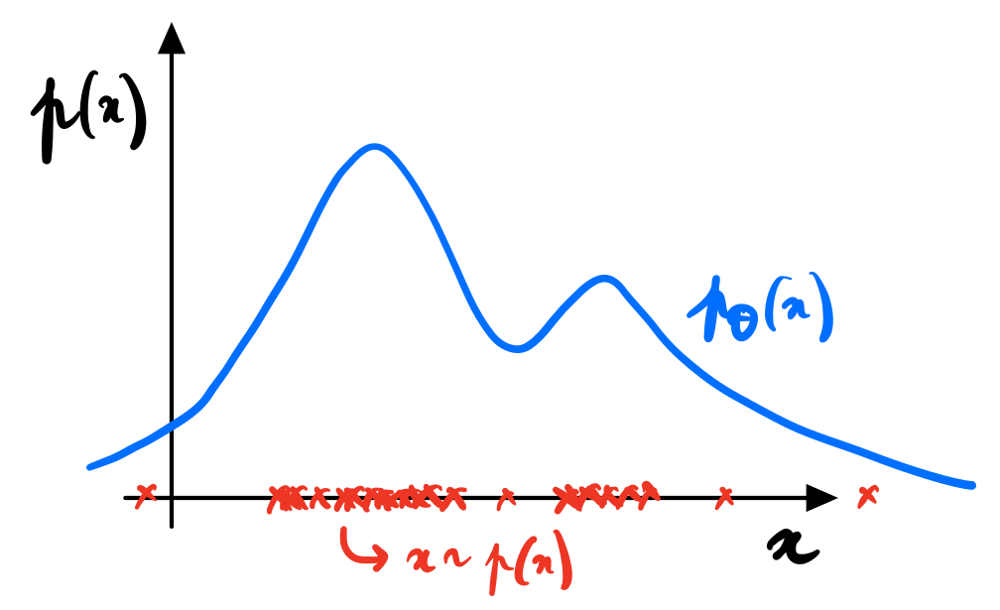
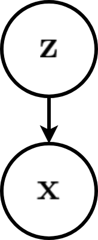
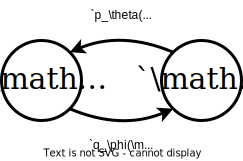
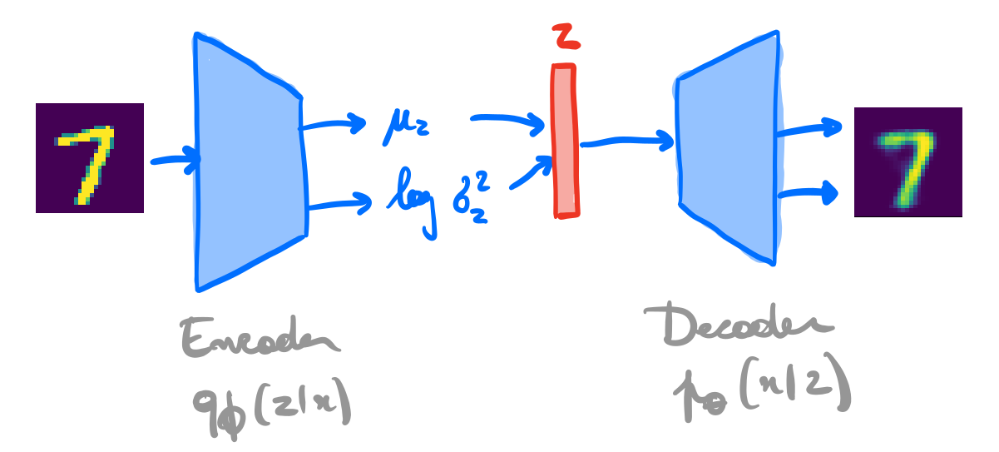
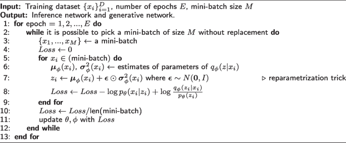
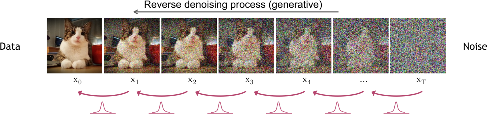
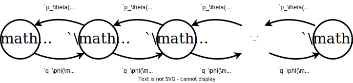
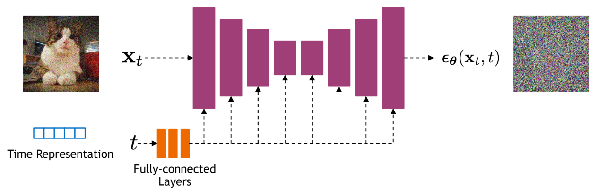
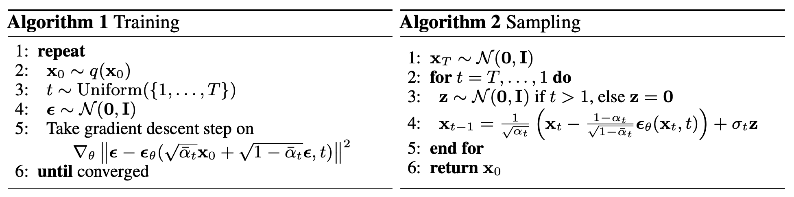

Deep Learning
Diffusion models
2024-02-14
Credits
Slides are adapted from lectures developed by Gilles Louppe at University of Liege, Belgium under the BSD 3-Clause License
- lectures 10, 11, and 12 of INFO8010 - Deep Learning
- and of lecture materials of SSI 2023
Deep generative models
Generative models
A (deep) generative model is a probabilistic model \(p_\theta\) that can be used as a simulator of the data.
Formally, a generative model defines a probability distribution \(p_\theta(\mathbf{x})\) over the data \(\mathbf{x} \in \mathcal{X}\), parameterized by \(\theta\).
Credits: Karsten et al, 2022; Siddharth Mishra-Sharma, 2023.
Generative models
What makes a good generative model (Prince 2023)?
Generative models based on latent variables should have the following properties:
- Efficient sampling: Generating samples from the model should be computation- ally inexpensive and take advantage of the parallelism of modern hardware.
- High-quality sampling: The samples should be indistinguishable from the real data with which the model was trained.
- Coverage: Samples should represent the entire training distribution. It is insufficient to generate samples that all look like a subset of the training examples.
- Well-behaved latent space: Every latent variable \(z\) corresponds to a plausible data example \(x\). Smooth changes in \(z\) correspond to smooth changes in \(x\).
- Disentangled latent space: Manipulating each dimension of \(z\) should correspond to changing an interpretable property of the data. For example, in a model of language, it might change the topic, tense, or verbosity.
- Efficient likelihood computation: If the model is probabilistic, we would like to be able to calculate the probability of new examples
Latent variable model

Consider for now a prescribed latent variable model that relates a set of observable variables \(\mathbf{x} \in \mathcal{X}\) to a set of unobserved variables \(\mathbf{z} \in \mathcal{Z}\).
The probabilistic model defines a joint probability distribution \(p_\theta(\mathbf{x}, \mathbf{z})\), which decomposes as \[p_\theta(\mathbf{x}, \mathbf{z}) = p_\theta(\mathbf{x}|\mathbf{z}) p(\mathbf{z}).\]
If we interpret \(\mathbf{z}\) as causal factors for the high-dimension representations \(\mathbf{x}\), then sampling from \(p_\theta(\mathbf{x}|\mathbf{z})\) can be interpreted as a stochastic generating process from \(\mathcal{Z}\) to \(\mathcal{X}\).
Hot to fit?
\[\begin{aligned} \theta^{*} &= \arg \max_\theta p_\theta(\mathbf{x}) \\\\ &= \arg \max_\theta \int p_\theta(\mathbf{x}|\mathbf{z}) p(\mathbf{z}) d\mathbf{z}\\\\ &= \arg \max_\theta \mathbb{E}_{p(\mathbf{z})}\left[ p_\theta(\mathbf{x}|\mathbf{z}) \right] d\mathbf{z}\\\\ &\approx \arg \max_\theta \frac{1}{N} \sum_{i=1}^N p_\theta(\mathbf{x}|\mathbf{z}_i) \end{aligned}\]
Note
The curse of dimensionality will lead to poor estimates of the expectation.


We will directly learn a stochastic generating process \(p_\theta(\mathbf{x}|\mathbf{z})\) with a neural network.
We will also amortize the inference process by learning a second neural network \(q_\phi(\mathbf{z}|\mathbf{x})\) approximating the posterior, conditionally on the observed data \(\mathbf{x}\).
A variational auto-encoder is a deep latent variable model where:
The prior \(p(\mathbf{z})\) is prescribed, and usually chosen to be Gaussian.
The density \(p_\theta(\mathbf{x}|\mathbf{z})\) is parameterized with a generative network \(\text{NN}_\theta\) (or decoder) that takes as input \(\mathbf{z}\) and outputs parameters to the data distribution. E.g., \[\begin{aligned} \mu, \sigma^2 &= \text{NN}_\theta(\mathbf{z}) \\\\ p_\theta(\mathbf{x}|\mathbf{z}) &= \mathcal{N}(\mathbf{x}; \mu, \sigma^2\mathbf{I}) \end{aligned}\]
The approximate posterior \(q_\phi(\mathbf{z}|\mathbf{x})\) is parameterized with an inference network \(\text{NN}_\phi\) (or encoder) that takes as input \(\mathbf{x}\) and outputs parameters to the approximate posterior. E.g., \[\begin{aligned} \mu, \sigma^2 &= \text{NN}_\phi(\mathbf{x}) \\\\ q_\phi(\mathbf{z}|\mathbf{x}) &= \mathcal{N}(\mathbf{z}; \mu, \sigma^2\mathbf{I}) \end{aligned}\]
Variational auto-encoders
We can use variational inference to jointly optimize the generative and the inference networks parameters \(\theta\) and \(\phi\):
\[\begin{aligned} \theta^{*}, \phi^{*} &= \arg \max_{\theta,\phi} \mathbb{E}_{p(\mathbf{x})} \left[ \text{ELBO}(\mathbf{x};\theta,\phi) \right] \\\\ &= \arg \max_{\theta,\phi} \mathbb{E}_{p(\mathbf{x})}\left[ \mathbb{E}_{q_\phi(\mathbf{z}|\mathbf{x})} [ \log \frac{p_\theta(\mathbf{x}|\mathbf{z}) p(\mathbf{z})}{q_\phi(\mathbf{z}|\mathbf{x})} ] \right] \\\\ &= \arg \max_{\theta,\phi} \mathbb{E}_{p(\mathbf{x})}\left[ \mathbb{E}_{q_\phi(\mathbf{z}|\mathbf{x})}\left[ \log p_\theta(\mathbf{x}|\mathbf{z})\right] - \text{KL}(q_\phi(\mathbf{z}|\mathbf{x}) || p(\mathbf{z})) \right]. \end{aligned}\]
- Given some generative network \(\theta\), we want to put the mass of the latent variables, by adjusting \(\phi\), such that they explain the observed data, while remaining close to the prior.
- Given some inference network \(\phi\), we want to put the mass of the observed variables, by adjusting \(\theta\), such that they are well explained by the latent variables.
Pseudo code
Diffusion models
Credits: Kreis et al, 2022.
Credits: Kreis et al, 2022.
With \(\epsilon \sim \mathcal{N}(\mathbf{0}, \mathbf{I})\), we have \[\begin{aligned} \mathbf{x}_t &= \sqrt{ {\alpha}_t} \mathbf{x}_{t-1} + \sqrt{1-{\alpha}_t} \epsilon \\\\ q(\mathbf{x}_t | \mathbf{x}_{t-1}) &= \mathcal{N}(\mathbf{x}_t ; \sqrt{\alpha_t} \mathbf{x}_{t-1}, (1-\alpha_t)\mathbf{I}) \\\\ q(\mathbf{x}_{1:T} | \mathbf{x}_{0}) &= \prod_{t=1}^T q(\mathbf{x}_t | \mathbf{x}_{t-1}) \end{aligned}\]
sampling from \(p_\theta(\mathbf{x}|\mathbf{z})\) can be interpreted as a stochastic generating process from \(\mathcal{Z}\) to \(\mathcal{X}\).
Credits: Simon J.D. Prince, 2023.

\[\begin{aligned} p(\mathbf{x}_{0:T}) &= p(\mathbf{x}_T) \prod_{t=1}^T p_\theta(\mathbf{x}_{t-1} | \mathbf{x}_t)\\\\ p(\mathbf{x}_T) &= \mathcal{N}(\mathbf{x}_T; \mathbf{0}, I) \\\\ p_\theta(\mathbf{x}_{t-1} | \mathbf{x}_t) &= \mathcal{N}(\mathbf{x}_{t-1}; \mu_\theta(\mathbf{x}_t, t), \sigma^2_\theta(\mathbf{x}_t, t)\mathbf{I}) \\\\ \mathbf{x}_{t-1} &= \mu_\theta(\mathbf{x}_t, t) + \sigma_\theta(\mathbf{x}_t, t) \mathbf{z} \end{aligned}\] with \(\mathbf{z} \sim \mathcal{N}(\mathbf{0}, \mathbf{I})\).
Markovian Hierarchical VAEs
Similarly to VAEs, training is done by maximizing the ELBO, using a variational distribution \(q_\phi(\mathbf{z}_{1:T} | \mathbf{x})\) over all levels of latent variables: \[\begin{aligned} \log p_\theta(\mathbf{x}) &\geq \mathbb{E}_{q_\phi(\mathbf{z}_{1:T} | \mathbf{x})}\left[ \log \frac{p(\mathbf{x},\mathbf{z}_{1:T})}{q_\phi(\mathbf{z}_{1:T}|\mathbf{x})} \right] \end{aligned}\]
Diffusion models are Markovian HVAEs with the following constraints:
The latent dimension is the same as the data dimension.
The encoder is fixed to linear Gaussian transitions \(q(\mathbf{x}_t | \mathbf{x}_{t-1})\).
The hyper-parameters are set such that \(q(\mathbf{x}_T | \mathbf{x}_0)\) is a standard Gaussian.
Training
For learning the parameters \(\theta\) of the reverse process, we can form a variational lower bound on the log-likelihood of the data as
\[\mathbb{E}_{q(\mathbf{x}_0)}\left[ \log p_\theta(\mathbf{x}_0) \right] \geq \mathbb{E}_{q(\mathbf{x}_0)q(\mathbf{x}_{1:T}|\mathbf{x}_0)}\left[ \log \frac{p_\theta(\mathbf{x}_{0:T})}{q(\mathbf{x}_{1:T} | \mathbf{x}_0)} \right] := L\]
This objective can be rewritten as \[\begin{aligned} L &= \mathbb{E}_{q(\mathbf{x}_0)q(\mathbf{x}_{1:T}|\mathbf{x}_0)}\left[ \log \frac{p_\theta(\mathbf{x}_{0:T})}{q(\mathbf{x}_{1:T} | \mathbf{x}_0)} \right] \\\\ &= \mathbb{E}_{q(\mathbf{x}_0)} \left[L_0 - \sum_{t>1} L_{t-1} - L_T\right] \end{aligned}\] where
\(L_0 = \mathbb{E}_{q(\mathbf{x}_1 | \mathbf{x}_0)}[\log p_\theta(\mathbf{x}_0 | \mathbf{x}_1)]\) can be interpreted as a reconstruction term. It can be approximated and optimized using a Monte Carlo estimate.
\(L_{t-1} = \mathbb{E}_{q(\mathbf{x}_t | \mathbf{x}_0)}\text{KL}(q(\mathbf{x}_{t-1}|\mathbf{x}_t, \mathbf{x}_0) || p_\theta(\mathbf{x}_{t-1} | \mathbf{x}_t) )\) is a denoising matching term. The transition \(q(\mathbf{x}_{t-1}|\mathbf{x}_t, \mathbf{x}_0)\) provides a learning signal for the reverse process, since it defines how to denoise the noisified input \(\mathbf{x}_t\) with access to the original input \(\mathbf{x}_0\).
\(L_T = \text{KL}(q(\mathbf{x}_T | \mathbf{x}_0) || p_\theta(\mathbf{x}_T))\) represents how close the distribution of the final noisified input is to the standard Gaussian. It has no trainable parameters.
(Some calculations later…)
\[\begin{aligned} &\arg \min_\theta L_{t-1} \\\\ =&\arg \min_\theta \mathbb{E}_{q(\mathbf{x}_t | \mathbf{x}_0)} \frac{1}{2\sigma^2_t} \frac{\bar{\alpha}_{t-1}(1-\alpha_t)^2}{(1-\bar{\alpha}_t)^2} || \hat{\mathbf{x}}_\theta(\mathbf{x}_t, t) - \mathbf{x}_0 ||_2^2 \end{aligned}\]
Note
Interpretation 1: Denoising. Training a diffusion model amounts to learning a neural network that predicts the original ground truth \(\mathbf{x}_0\) from a noisy input \(\mathbf{x}_t\).
\[\begin{aligned} &\arg \min_\theta L_{t-1} \\\\ =&\arg \min_\theta \mathbb{E}_{\mathcal{N}(\epsilon;\mathbf{0}, I)} \frac{1}{2\sigma^2_t} \frac{(1-\alpha_t)^2}{(1-\bar{\alpha}_t) \alpha_t} || {\epsilon}_\theta(\underbrace{\sqrt{\bar{\alpha}_t} \mathbf{x}_{0} + \sqrt{1-\bar{\alpha}_t} \epsilon}_{\mathbf{x}_t}, t) - \epsilon ||_2^2 \\\\ \approx& \arg \min_\theta \mathbb{E}_{\mathcal{N}(\epsilon;\mathbf{0}, I)} || {\epsilon}_\theta(\underbrace{\sqrt{\bar{\alpha}_t} \mathbf{x}_{0} + \sqrt{1-\bar{\alpha}_t} \epsilon}_{\mathbf{x}_t}, t) - \epsilon ||_2^2 \end{aligned}\]
Note
Interpretation 2: Noise prediction. Training a diffusion model amounts to learning a neural network that predicts the noise \(\epsilon\) that was added to the original ground truth \(\mathbf{x}_0\) to obtain the noisy \(\mathbf{x}_t\).
\[\begin{aligned} &\arg \min_\theta L_{t-1} \\\\ =&\arg \min_\theta \mathbb{E}_{q(\mathbf{x}_t | \mathbf{x}_0)} \frac{1}{2\sigma^2_t} \frac{(1-\alpha_t)^2}{\alpha_t} || s_\theta(\mathbf{x}_t, t) - \nabla_{\mathbf{x}_t} \log q(\mathbf{x}_t | \mathbf{x}_0) ||_2^2 \end{aligned}\]
Note
Interpretation 3: Denoising score matching. Training a diffusion model amounts to learning a neural network that predicts the score \(\nabla_{\mathbf{x}_t} \log q(\mathbf{x}_t | \mathbf{x}_0)\) of the tractable posterior.
The distribution \(q(\mathbf{x}_{t-1}|\mathbf{x}_t, \mathbf{x}_0)\) is the tractable posterior distribution \[\begin{aligned} q(\mathbf{x}_{t-1}|\mathbf{x}_t, \mathbf{x}_0) &= \frac{q(\mathbf{x}_t | \mathbf{x}_{t-1}, \mathbf{x}_0) q(\mathbf{x}_{t-1} | \mathbf{x}_0)}{q(\mathbf{x}_t | \mathbf{x}_0)} \\\\ &= \mathcal{N}(\mathbf{x}_{t-1}; \mu_q(\mathbf{x}_t, \mathbf{x}_0, t), \sigma^2_t I) \end{aligned}\] where \[ \mu_q(\mathbf{x}_t, \mathbf{x}_0, t) = \frac{\sqrt{\alpha_t}(1-\bar{\alpha}_{t-1})}{1-\bar{\alpha}_t}\mathbf{x}_t + \frac{\sqrt{\bar{\alpha}_{t-1}}(1-\alpha_t)}{1-\bar{\alpha}_t}\mathbf{x}_0 \qquad\text{and} \qquad \sigma^2_t = \frac{(1-\alpha_t)(1-\bar{\alpha}_{t-1})}{1-\bar{\alpha}_t} \]
Network architectures
Diffusion models often use U-Net architectures with ResNet blocks and self-attention layers to represent \(\hat{\mathbf{x}}_\theta(\mathbf{x}_t, t)\), \(\epsilon_\theta(\mathbf{x}_t, t)\) or \(s_\theta(\mathbf{x}_t, t)\).
Credits: Kreis et al, 2022.
Continuous-time diffusion models
Credits: Kreis et al, 2022.
With \(\beta_t = 1 - \alpha_t\), we can rewrite the forward process as \[\begin{aligned} \mathbf{x}_t &= \sqrt{ {\alpha}_t} \mathbf{x}_{t-1} + \sqrt{1-{\alpha}_t} \mathcal{N}(\mathbf{0}, \mathbf{I}) \\\\ &= \sqrt{1 - {\beta}_t} \mathbf{x}_{t-1} + \sqrt{ {\beta}_t} \mathcal{N}(\mathbf{0}, \mathbf{I}) \\\\ &= \sqrt{1 - {\beta}(t)\Delta_t} \mathbf{x}_{t-1} + \sqrt{ {\beta}(t)\Delta_t} \mathcal{N}(\mathbf{0}, \mathbf{I}) \end{aligned}\]

When \(\Delta_t \rightarrow 0\), we can further rewrite the forward process as \[ \mathbf{x}_t = \sqrt{1 - {\beta}(t)\Delta_t} \mathbf{x}_{t-1} + \sqrt{ {\beta}(t)\Delta_t} \mathcal{N}(\mathbf{0}, \mathbf{I})\approx \mathbf{x}_{t-1} - \frac{\beta(t)\Delta_t}{2} \mathbf{x}_{t-1} + \sqrt{ {\beta}(t)\Delta_t} \mathcal{N}(\mathbf{0}, \mathbf{I}) .\]
This last update rule corresponds to the Euler-Maruyama discretization of the stochastic differential equation (SDE) \[\text{d}\mathbf{x}_t = -\frac{1}{2}\beta(t)\mathbf{x}_t \text{d}t + \sqrt{\beta(t)} \text{d}\mathbf{w}_t\] describing the diffusion in the infinitesimal limit.
The reverse process satisfies a reverse-time SDE that can be derived analytically from the forward-time SDE and the score of the marginal distribution \(q(\mathbf{x}_t)\), as \[\text{d}\mathbf{x}_t = \left[ -\frac{1}{2}\beta(t)\mathbf{x}_t - \beta(t)\nabla_{\mathbf{x}_t} \log q(\mathbf{x}_t) \right] \text{d}t + \sqrt{\beta(t)} \text{d}\mathbf{w}_t.\]

Training & sampling diffusion models
Credit: Ho et. al., 2020
Continuous-time normalizing flows
Replace the discrete sequence of transformations with a neural ODE with reversible dynamics such that \[\begin{aligned} &\mathbf{z}_0 \sim p(\mathbf{z})\\\\ &\frac{d\mathbf{z}(t)}{dt} = f(\mathbf{z}(t), t, \theta)\\\\ &\mathbf{x} = \mathbf{z}(1) = \mathbf{z}_0 + \int_0^1 f(\mathbf{z}(t), t) dt. \end{aligned}\]
The instantaneous change of variable yields \[\log p(\mathbf{x}) = \log p(\mathbf{z}(0)) - \int_0^1 \text{Tr} \left( \frac{\partial f(\mathbf{z}(t), t, \theta)}{\partial \mathbf{z}(t)} \right) dt.\]
Probability flow ODE
Back to diffusion: For any diffusion process, there exists a corresponding deterministic process \[\text{d}\mathbf{x}_t = \left[ \mathbf{f}(t, \mathbf{x}_t) - \frac{1}{2} g^2(t) \nabla_{\mathbf{x}_t} \log p(\mathbf{x}_t) \right] \text{d}t\] whose trajectories share the same marginal densities \(p(\mathbf{x}_t)\).
Therefore, when \(\nabla_{\mathbf{x}_t} \log p(\mathbf{x}_t)\) is replaced by its approximation \(s_\theta(\mathbf{x}_t, t)\), the probability flow ODE becomes a special case of a neural ODE. In particular, it is an example of continuous-time normalizing flows!

Credits: Song, 2021.